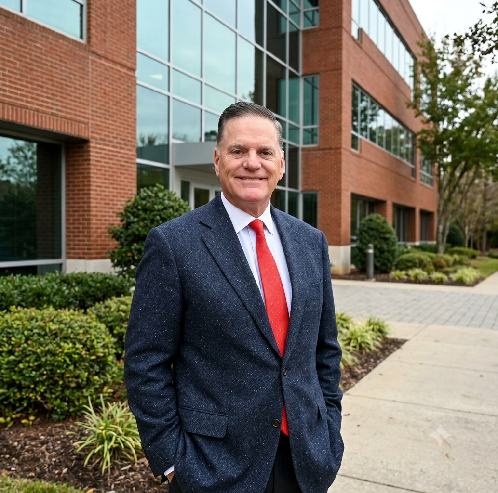

Keep Brian Parker · Director, Moulton Niguel Water District
Safe Water.
Low Rates.
Real Accountability.
Thirty years running global operations. A landmark reform report that brought a treatment plant back into local hands. Brian Parker is your Director on the Moulton Niguel board — and he's asking for your vote to keep that work going.

What Brian Stands For
Proven Business Experience for Moulton Niguel's Water Future
The principles guiding Brian's service on the MNWD board — practical priorities focused on what ratepayers actually feel.
Safeguarding Our Water Supply
Every drop we drink is imported. Brian is focused on long-term planning, water reuse, and the investments that keep South County supplied through drought, emergencies, and whatever comes next.
Maintaining the Lowest Possible Rates
Moulton Niguel has the lowest average water and wastewater bill in South Orange County. Brian brings three decades of contract and budget scrutiny to keeping it that way.
Ensuring Financial Accountability
More than $2 billion in water and wastewater infrastructure belongs to ratepayers. Brian believes they're entitled to see exactly how every dollar of it is managed.
Priorities
What Brian Is Focused On
Moulton Niguel delivers drinking water, recycled water, and wastewater service to nearly every household in Laguna Niguel, Aliso Viejo, Mission Viejo, Laguna Hills, Dana Point, and San Juan Capistrano.
A Reliable, Sustainable Supply of Water
Priority one is the reliable and sustainable supply of water to every Moulton Niguel customer. Everything else follows from it.
That reliability isn't automatic. Moulton Niguel imports all of its potable water from the Metropolitan Water District of Southern California — which means the District's job is to plan decades ahead: investing in the pipes, pumps, and treatment capacity that carry that supply, and expanding the recycled water and conservation programs that reduce how much we have to import in the first place.
Brian's focus is on long-term infrastructure planning backed by transparency on every aspect of fiscal operations — delivering the highest value at the lowest possible cost to the ratepayer. That's not a slogan. It's a standard the board should be measured against every year.
The Lowest Rates We Can Responsibly Charge
Moulton Niguel maintains the lowest average water and wastewater bill in South Orange County. Protecting that position is a core responsibility of the board — not a happy accident.
Brian spent more than three decades reviewing contracts and financial statements for a multi-billion-dollar global manufacturer, where a single overlooked clause could cost millions. He brings the same scrutiny to District procurement, capital planning, and operating budgets: does this contract serve the ratepayer, or just the vendor? Is this project scoped correctly, or scoped comfortably?
The District has earned strong rates by pairing conservation incentives, rebates, and water reuse with disciplined spending. Brian will keep pressing on operational efficiency so that Moulton Niguel's rate advantage holds — through inflation, through drought, and through the infrastructure investments the next twenty years will require.
Accountability for $2 Billion in Ratepayer Assets
Moulton Niguel's customers collectively own more than $2 billion in water and wastewater infrastructure. Brian believes stewardship of that scale demands more than a quarterly report.
He knows what independent oversight looks like from the outside. As a member of the 2023-24 Orange County Grand Jury, he co-authored “Emerging Opportunities in South County Water and Wastewater Systems” — a comprehensive review of how South County's water and wastewater agencies actually operate. The report became the catalyst for a landmark 2024 realignment of regional wastewater agencies, including Moulton Niguel reacquiring the Joint Regional Treatment Plant in Laguna Niguel and bringing that facility back under local control.
Brian's commitment on the board is to maintain the integrity of a AAA-rated agency through continuity of leadership, diligent oversight, and an unbroken focus on the Moulton Niguel customer.
About the Moulton Niguel Water District
Moulton Niguel traces its roots to 1960, when local ranchers banded together to form their own water agency and secure a reliable supply for the area. Today it serves six South County cities with drinking water, recycled water, and wastewater service — and it has become a regional leader in integrated water management, using rebates, water reuse, and public education to reduce reliance on imported supply.
The District is governed by a publicly elected Board of Directors. Its meetings, agendas, and budgets are open to the public, and residents can register for the District's customer portal to track their own water use and catch leaks early.
About Brian
About Brian Parker
A longtime Laguna Niguel resident, a Moulton Niguel ratepayer, and a career operator who has spent thirty years being accountable for other people's money.
At a Glance
- Appointed Director, Moulton Niguel Water District
- Member, 2023-2024 Orange County Grand Jury
- Co-author, Emerging Opportunities in South County Water and Wastewater Systems
- Former Corporate Officer & Vice President, global petrochemical supplier
- Past President, El Niguel Country Club
- Laguna Niguel resident and MNWD ratepayer
Brian Parker serves as an appointed member of the Moulton Niguel Water District Board of Directors, representing ratepayers across Laguna Niguel, Aliso Viejo, Mission Viejo, Laguna Hills, Dana Point, and San Juan Capistrano. He is committed to the principles of good governance, watershed protection, and responsible stewardship of the District's more than $2 billion in water and wastewater infrastructure assets.
An expert in corporate governance, international contracts, finance, and operational efficiency, Brian brings more than 30 years of experience in the global petrochemical industry to the board. As a Corporate Officer and Vice President for a multi-billion-dollar global supplier, he oversaw more than $250 million in corporate assets and led a workforce of more than 500 employees. He has held senior leadership roles on corporate, public, and charitable boards, and today consults for global composite and measurement manufacturers.
Brian's most recent public service is directly relevant to the District he now helps govern. As a member of the 2023-2024 Orange County Grand Jury, he co-authored a comprehensive report on improving the operational effectiveness of water and wastewater services in South Orange County. That report — “Emerging Opportunities in South County Water and Wastewater Systems” — served as the catalyst for a landmark 2024 realignment of regional wastewater agencies, which included Moulton Niguel reacquiring the Joint Regional Treatment Plant in Laguna Niguel. It is an unusual credential for a water board candidate: he studied these systems as an independent investigator before he was ever asked to oversee one.
Brian also served as President of El Niguel Country Club, where the Club updated its general plan and modernized the facility's creek system to enhance ecological preservation and watershed protection during his tenure. He is an active supporter of the community, with a family history of involvement in local schools and charitable organizations, including the National Charity League.
Brian and his family have called Laguna Niguel home for ten years. He pays the same water bill his neighbors do, and he reads the District's budget the way he read balance sheets for three decades — line by line. He respectfully asks for your vote to continue serving as your Moulton Niguel Water District Director.
Keep Proven Leadership on the Board
Water district elections rarely make headlines — but few offices touch your household more directly, or more often. Brian Parker respectfully asks for your vote on Tuesday, November 3, 2026.
Contact
Get in Touch
Questions about the District, ideas for the campaign, or want to lend a hand? We'd love to hear from you.
info@votebrianparker.com